The problem
Simulated humans don't act like real ones
Existing methods are fast or optimal, not both
The fix
How do people intervene?
We asked 8 participants to supervise a simulated robot as it learned 3 manipulation tasks, collected about 2,000 episodes (200k steps) of their interventions, and analyzed when and how they stepped in.
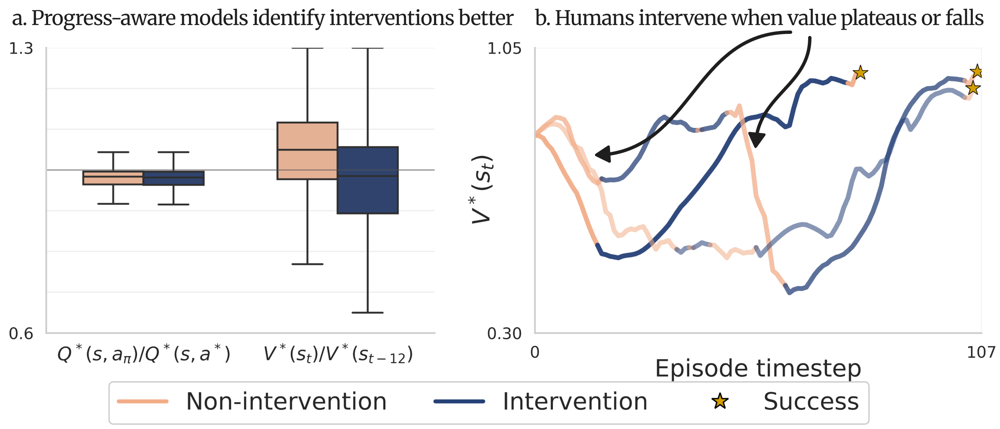
Takeovers follow plateaus or drops in value, not single bad actions.
DesignSo Q-OIL keeps the bonus from leaking back to the states before a takeover.
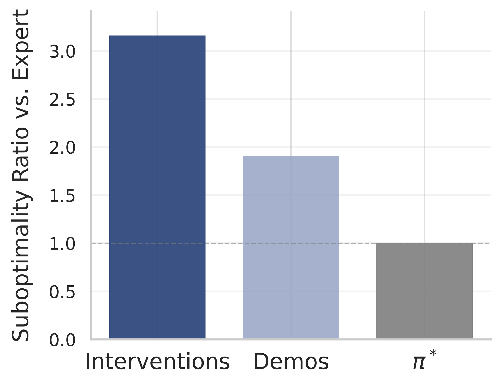
Takeover actions are about 3× more suboptimal than an expert policy.
DesignSo Q-OIL uses corrections to guide exploration, not as targets to imitate.
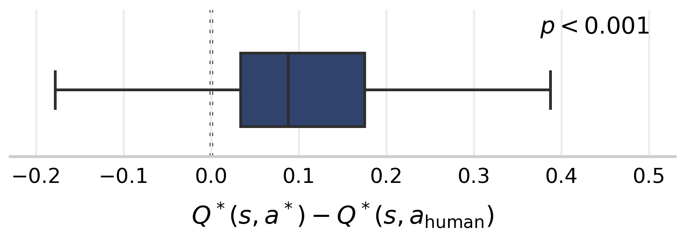
The trained robot picks different, better actions than the person did.
DesignSo corrections only guide exploration, and their influence fades as takeovers become rare.
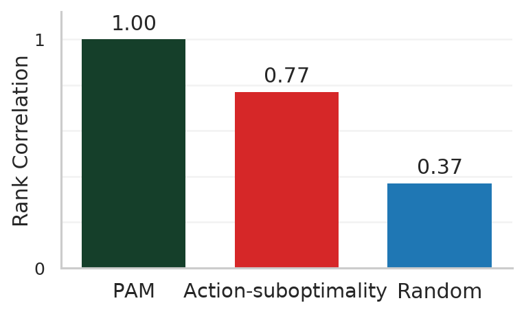
PAM, our progress-aware intervention model, matches real users' ranking exactly. Its coefficients k, δ, α, β are learned from real intervention data.
P(intervene) = α if V*(st) − V*(st−k) < δ, else β
BenchmarkSo we compare every method with PAM in simulation.
Since human corrections are not always optimal, use them for exploration guidance rather than as supervision
We use these insights to design Q-OIL (Q-Optimistic Intervention Learning): a simple change to any off-policy RL algorithm: each takeover earns an optimism bonus that guides exploration.
- for each step:
- act: the person if they take over, else the robot
- store (s, a, r, s')
- update Q toward r + γ Q(s', a')
- update the policy to maximize Q
Interventions are treated like any other data.
- for each step:
- act: the person if they take over, else the robot
- store (s, a, r, s'), plus a bonus b if it was a takeoverFinding 2
- update Qtask toward r + γ Qtask(s', a')
- update Qopt toward r + b + γ Qtask(s', a')Finding 1
- update the policy to maximize Qopt, plus BC on takeoversFinding 3
Interventions guide exploration, and the bonus stays on the intervention.
addedchanged
Our algorithm is based on data-driven insights
How does Q-OIL work?
Each takeover earns a small bonus, which raises the value of the path the person showed, so the robot explores corrective behaviors without directly mimicking them. A second, task-only critic provides the bootstrap targets, so the bonus cannot leak back to the states where the robot was failing. As the robot needs help less often, bonus steps become rare and Q-OIL settles on the policy that is best for the task.
Why two critics?
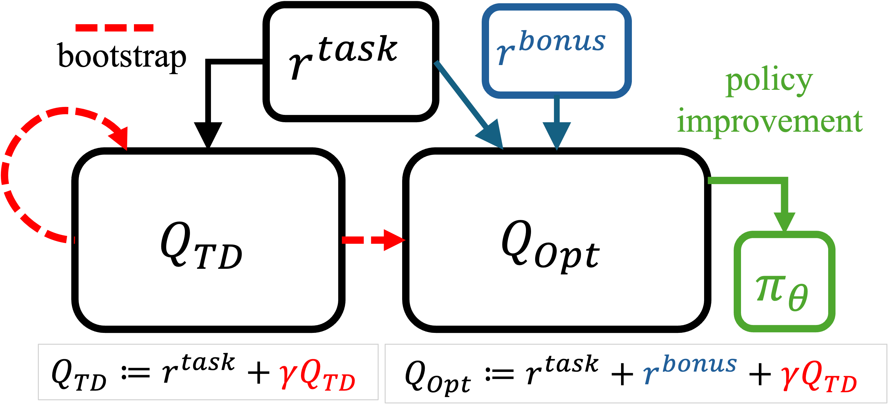
How does it compare to other methods?
Results
Simulated and real human interventions
- Q-OIL robustly outperforms all methods with both simulated and real human interventions.
- Our updated simulated intervention model (PAM) keeps the ranking of all algorithms that real people produce, so simulation gives more reliable insights.
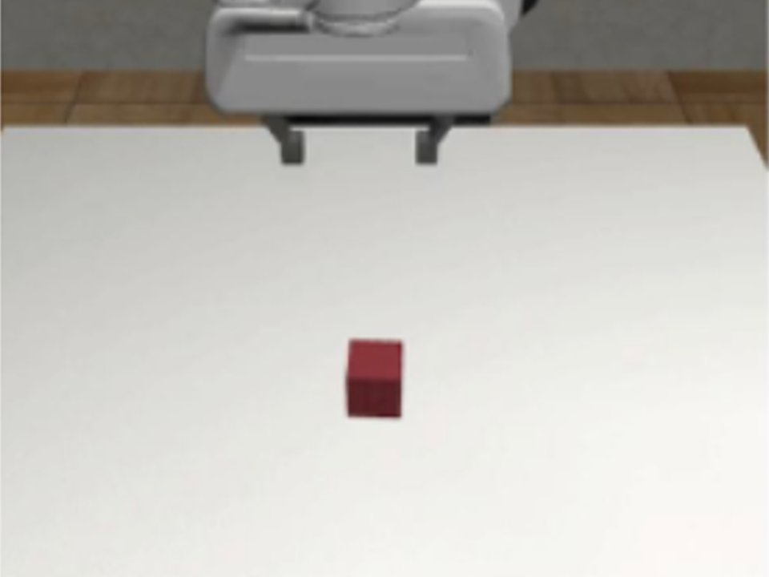
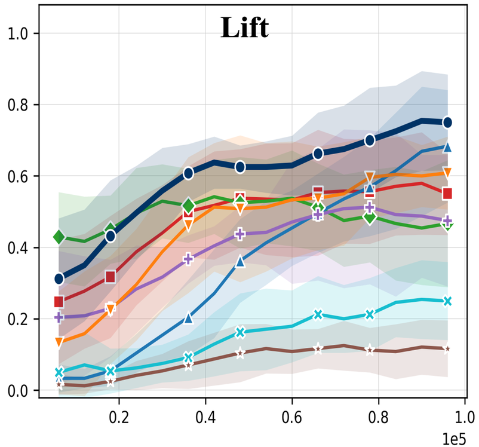
Environment steps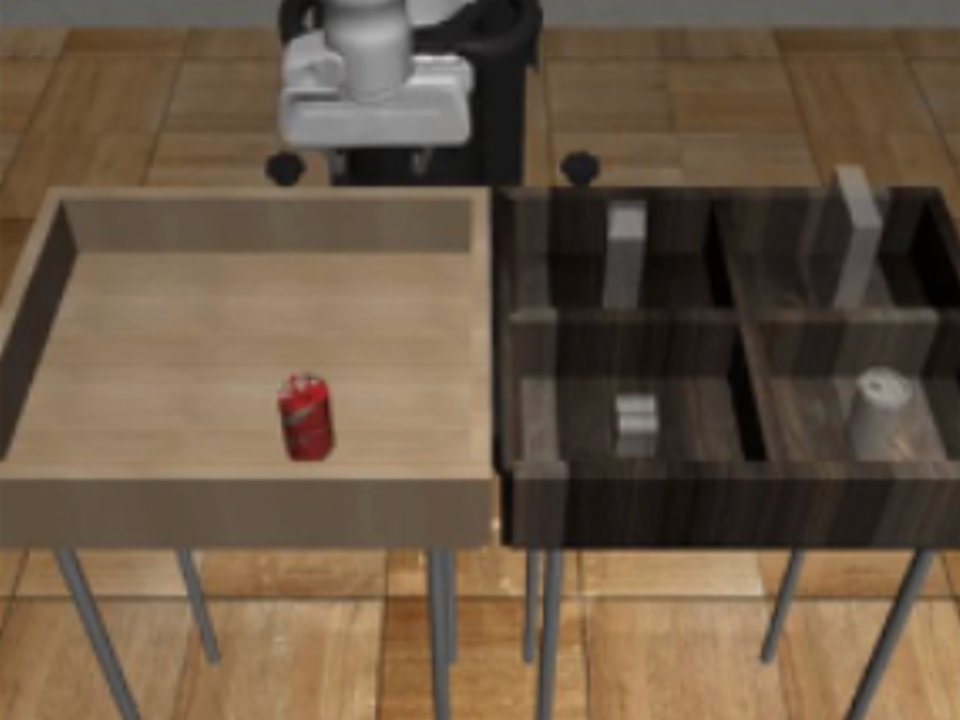
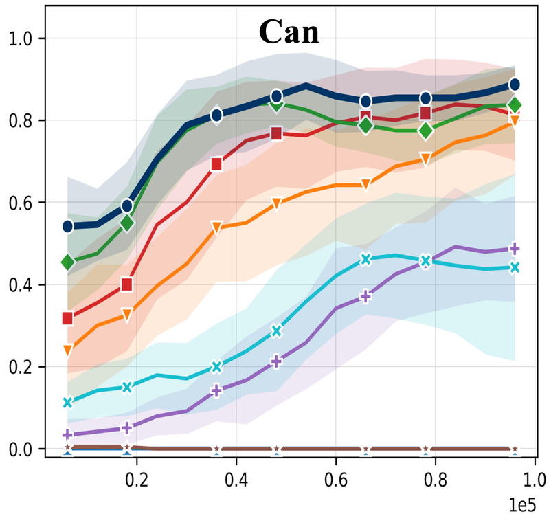
Environment steps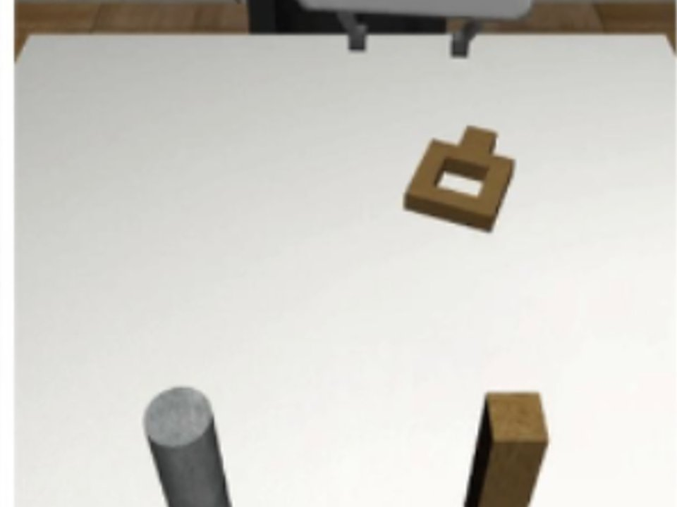
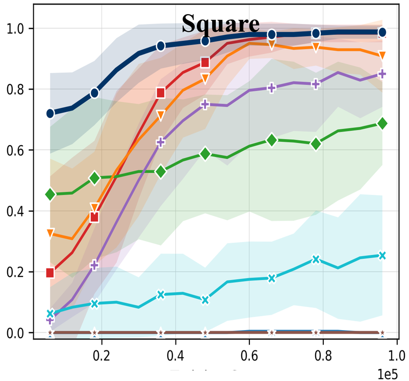
Environment steps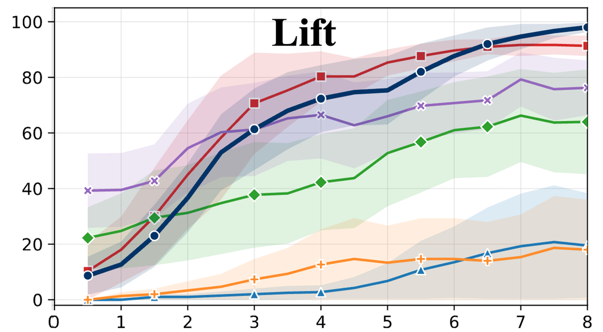
Environment steps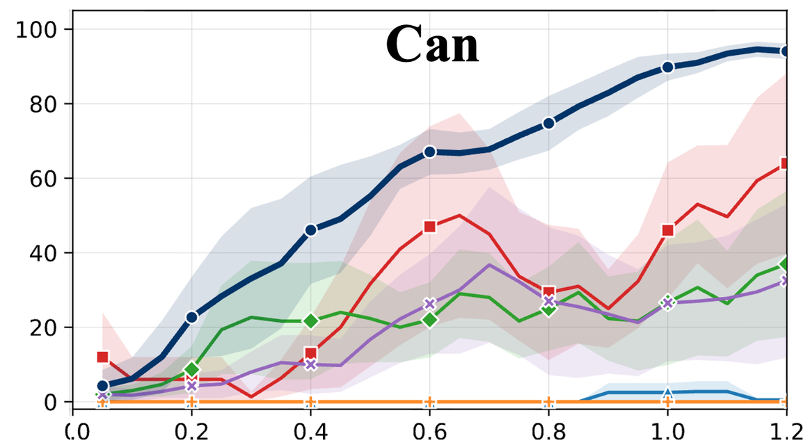
Environment steps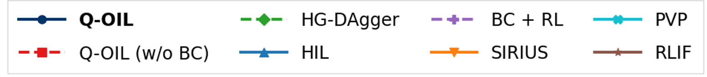
Real robots: Franka
- Q-OIL reaches 10–50% higher success on real Franka tasks, with about 30% less human effort.
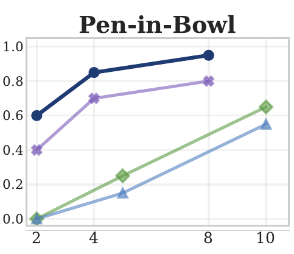
Environment steps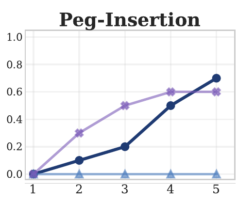
Environment steps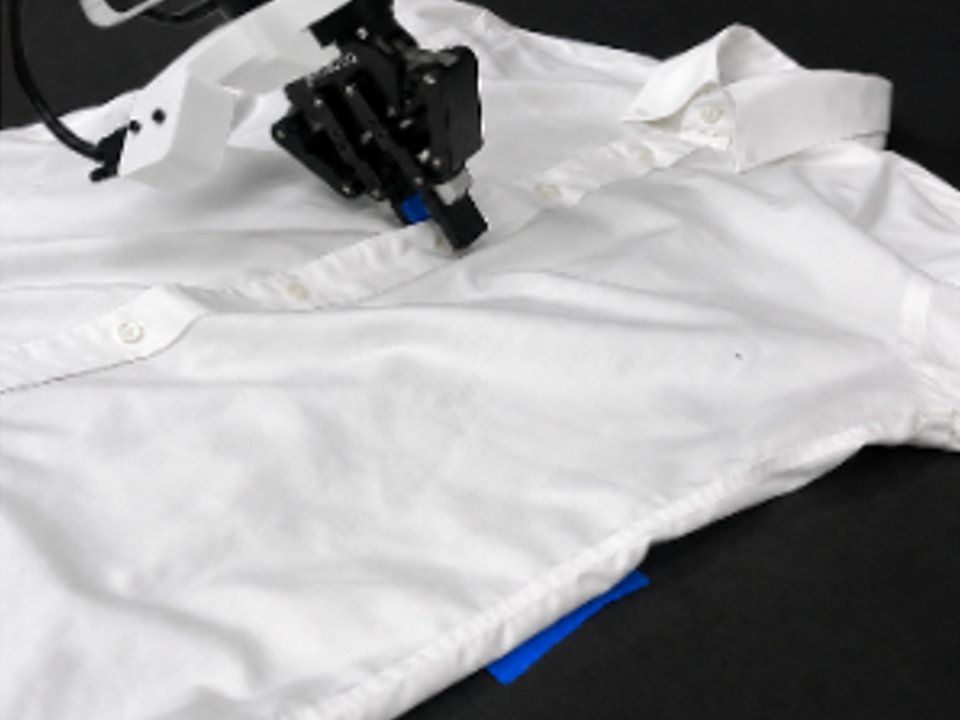
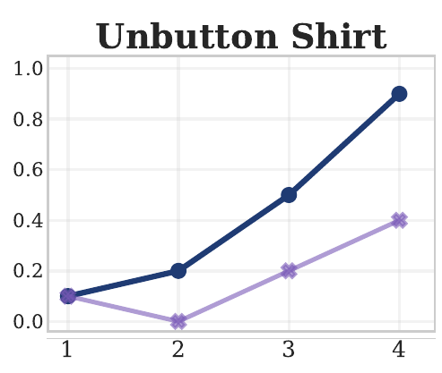
Environment stepsPretrained VLAs, bimanual robot
- Q-OIL drops straight into a VLA post-training pipeline. We fine-tune a pretrained VLA on 25 demonstrations, freeze it, and train a small residual policy online with Q-OIL from the operator's interventions.
Ablation: why two critics?
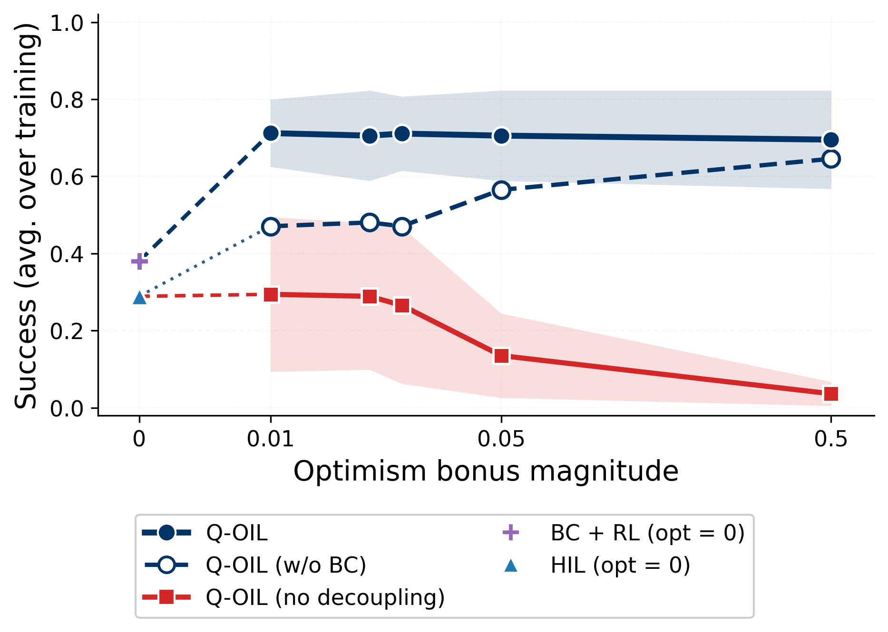
Q-OIL is stable across a 50× range of bonus values. With one critic, the bonus leaks backward (see Why two critics?), and performance collapses as the bonus grows.
BibTeX
@inproceedings{qoil2026,
title = {Q-OIL: Optimistic Exploration in Learning from Human Interventions},
author = {Teegavarapu, Pranav and Poddar, Sriyash and Qi, Rico and
Winston, Cleah and Khandelwal, Krisha and Onol, Aykut and
Jaques, Natasha and Gupta, Abhishek},
booktitle = {Conference on Robot Learning (CoRL)},
year = {2026},
}